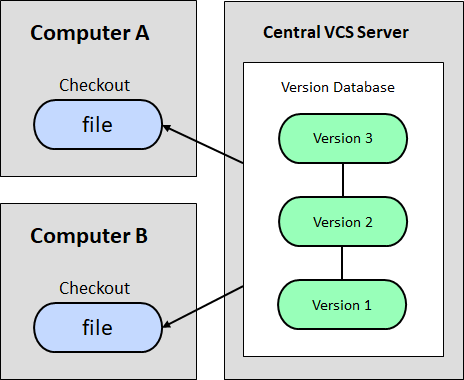
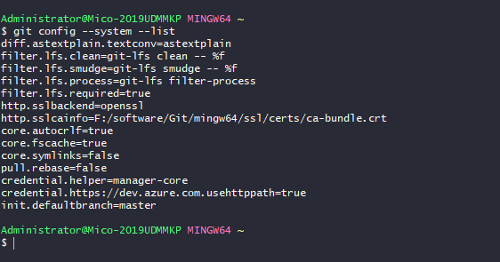
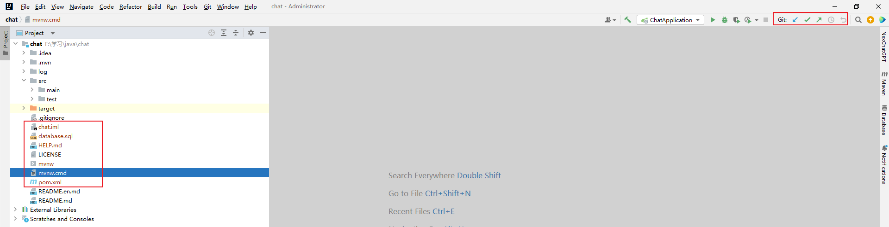

Git
版本控制
什么是版本控制？
版本控制（Revision control）是一种在开发过程中用于管理我们对文件、目录或工程等内容的修改历史，方便查看更改历史记录，备份以便恢复以前的版本的软件工程技术。简单来说就是用于管理多人协同开发项目的技术。
为什么要有版本控制？
没有进行版本控制或者版本控制本身缺乏正确的流程管理，在软件开发过程中将会引入很多问题，如软件代码的一致性、软件内容的冗余、软件过程的事物性、软件开发过程中的并发性、软件源代码的安全性，以及软件的整合等问题。
版本控制带来的便利：
- 实现跨区域多人协同开发
- 追踪和记载一个或者多个文件的历史记录
- 组织和保护你的源代码和文档
- 统计工作量
- 并行开发、提高开发效率
- 跟踪记录整个软件的开发过程
- 减轻开发人员的负担，节省时间，同时降低人为错误
常见的版本控制工具
主流的版本控制器有Git、SVN、CVS、VSS、TFS等，现在影响力最大且使用最广泛的是Git与SVN。
版本控制分类
本地版本控制
记录文件每次的更新，可以对每个版本做一个快照，或是记录补丁文件，适合个人使用，如RCS。
集中版本控制
所有的版本数据都保存在服务器上，协同开发者从服务器上同步更新或上传自己的修改。
所有的版本数据都存在服务器上，用户的本地只有自己以前所同步的版本，如果不连网的话，用户就看不到历史版本，也无法切换版本验证问题，或在不同分支工作。而且，所有数据都保存在单一的服务器上，有很大的风险这个服务器会损坏，这样就会丢失所有的数据，当然可以定期备份。代表产品：SVN、CVS、VSS。
分布式版本控制
所有版本信息仓库全部同步到本地的每个用户，这样就可以在本地查看所有版本历史，可以离线在本地提交，只需在连网时push到相应的服务器或其他用户那里。由于每个用户那里保存的都是所有的版本数据，只要有一个用户的设备没有问题就可以恢复所有的数据，但这增加了本地存储空间的占用。
每个人都拥有全部的代码，存在安全隐患，但不会因为服务器损坏或者网络问题造成不能工作的情况。
Git与SVN的主要区别
SVN是集中式版本控制系统，版本库是集中放在中央服务器的，而工作的时候，用的都是自己的电脑，所以首先要从中央服务器得到最新的版本，然后工作。完成工作后，需要把自己做完的活推送到中央服务器。集中式版本控制系统是必须联网才能工作，对网络带宽要求较高。
Git是分布式版本控制系统，没有中央服务器，每个人的电脑就是一个完整的版本库，工作的时候不需要联网了，因为版本都在自己电脑上。协同的方法是这样的：比如说自己在电脑上改了文件A，其他人也在电脑上改了文件A，这时，你们两之间只需把各自的修改推送给对方，就可以互相看到对方的修改了。Git可以直接看到更新了哪些代码和文件。
Git环境配置
下载
进入git官网，下载对应操作系统的版本，安装时无脑下一步即可。
注意：官网下载速度慢，可以使用淘宝镜像下载。
启动Git
安装成功后在开始菜单中会有Git选项，该选项下有几个程序，此外右击任意文件夹也可以看到对应的程序。
程序介绍：
- Git Bash：Unix与Linux风格的命令行，使用最多
- Git CMD：Windows风格的命令行
- Git GUI：图形界面的Git，不建议初学者使用，尽量先熟悉常用命令
常用的Linux命令
# 改变目录
cd xxx
# 回退到上一个目录，直接cd则进入默认目录
cd ..
# 显示当前所在的目录路径
pwd
# ls或ll，列出当前目录中的所有文件，只不过ll列出的内容更为详细
ls(ll)
# 新建一个文件，例如touch index.js => 在当前目录下新建一个index.js文件
touch xxx
# 删除一个文件，例如rm index.js => 删除index.js
rm xxx
# 新建一个目录，即新建一个文件夹
mkdir xxx
# 删除一个文件夹，例如rm -r src => 删除src文件夹
rm -r xxx
# 移动文件，mv index.html src => index.html是需要移动的文件，src是目标文件夹，这种写法必须保证文件和目标文件夹在同一目录下
mv xxx xxx
# 重新初始化终端
reset
# 清屏
clear
# 查看命令历史
history
# 帮助
help
# 退出
exit注意：
rm -rf /命令切勿在Linux中尝试，会删除电脑中全部文件！Git配置
查看配置
git config -l
# 或是git config --listGit相关的配置文件
- 系统配置：Git\etc\gitconfig（Git安装目录下的gitconfig）
- 用户配置：C:\Users\Administrator\.gitconfig
查看不同级别的配置文件
# 查看系统配置
git config --system --list
# 查看用户（global全局）配置
git config --global --list设置用户名与邮箱（用户标识，必要）
安装Git后首先要做的就是设置用户名和邮箱，这是非常重要的，因为每次Git提交都会使用该信息，它被永远的嵌入到你的提交中。
# 用户名
git config --global user.name "liuliangcong"
# 邮箱
git config --global user.email "1875234438@qq.com"
Git基本理论
Git本地有三个工作区域：工作目录（Working Directory）、暂存区（Stage/Index）、资源库（Repository或Git Directory）。如果再加上远程的git仓库（Remote Directory），就可以分为四个工作区域。文件在这四个区域之间的转换关系如下
- Workspace：工作区，即平时存放项目代码的地方；
- Stage/Index：暂存区，用于临时存放你的改动，事实上它只是一个文件，保存即将提交到文件列表的信息；
- Repository：仓库区（或本地仓库），安全存放数据的位置，这里面有你提交的所有版本的数据。其中HEAD指向最新放入仓库的版本；
- Remote：远程仓库，托管代码的服务器，可以简单的认为是你项目组中的一台电脑用于远程数据交换。
Git的工作流程一般是这样的：
- 在工作目录中添加、修改文件。
- 将需要进行版本管理的文件放入暂存区域。
- 将暂存区域的文件提交到Git仓库。
Git项目搭建
工作目录（WorkSpace）一般就是你希望Git帮助你管理的文件夹，可以是你项目的目录，也可以是一个空目录，建议不要有中文。
日常使用只要记住下图6个命令即可：
本地仓库搭建
创建本地仓库的方法有两种：一种是创建全新的仓库，另一种是克隆远程仓库。
创建全新的仓库：在Git所管理项目的根目录下执行以下命令：
# 在当前目录下新建一个Git代码库
git init执行后可以看到在项目目录下多出了一个.git目录，关于版本等所有信息都在这个目录中。
克隆远程目录：将远程服务器上的仓库完全镜像一份至本地，执行以下命令：
# 克隆一个项目和它的整个代码历史（版本信息）
git clone url
文件操作
要对文件进行修改、提交等操作，首先要知道文件当前处于什么状态，不然可能会提交现在还不想提交的文件，或者要提交的文件没提交上。
文件的四种状态
- Untracked：未跟踪，此文件在文件夹中，但并没有加入到git库，不参与版本控制，通过
git add命令可使其状态变为Staged。 - Unmodify：文件已经入库，未修改，即版本库中的文件快照内容与文件夹中完全一致。这种类型的文件有两种去处，如果它被修改，则变为
Modified；如果使用git rm命令移出版本库，则变为Untracked。 - Modified：文件已修改，仅仅是修改，并没有进行其他的操作。这个文件也有两个去处，通过
git add命令则进入staged状态，通过git checkout命令则丢弃修改，返回unmodify状态。这个git checkout命令表示从库中取出文件，覆盖当前修改！ - Staged：暂存状态，执行
git commit命令则将修改同步到库中，这时库中的文件和本地文件又变为一致，文件变为Unmodify状态。执行git reset HEAD filename命令取消暂存，文件状态变为Modified。
- Untracked：未跟踪，此文件在文件夹中，但并没有加入到git库，不参与版本控制，通过
查看文件状态
# 查看所有文件状态
git status
# 查看指定文件状态
git status [filename]
# 添加所有文件到暂存区
git add .
# 提交暂存区中的内容到本地仓库，-m后可添加显示的信息
git commit -m "消息内容"忽略文件
有些时候我们不想把某些文件纳入版本控制中，比如数据库文件、临时文件、设计文件等。
在主目录下建立
.gitignore文件，此文件有如下规则：- 忽略文件中的空行或以井号（#）开始的行将会被忽略。
- 可以使用Linux通配符。例如：星号（*）代表任意多个字符，问号（?）代表一个字符，方括号（[abc]）代表可选字符范围，大括号（{string1, string2, …}）代表可选的字符串等。
- 如果名称的最前面有一个感叹号（!），表示例外规则，将不被忽略。
# #为注释
*.txt # 忽略所有.txt结尾的文件
!lib.txt # lib.txt不忽略
/temp # 仅忽略根目录下的temp文件
build/ # 忽略build/目录下的所有文件
doc/*.txt # 忽略doc/*.txt，但不忽略doc/*/*.txt
Git分支
git分支中常用指令
# 列出所有本地分支 |
如果同一个文件在合并分支时都被修改了则会引起冲突，解决的办法是修改冲突文件后重新提交，选择要保留他的修改还是你的修改。
master主分支应该非常稳定，用来发布新版本，一般情况下不允许在上面工作。正常情况下在新建的dev分支上进行工作，工作完后，比如要发布，或者说dev分支代码稳定后可以合并到主分支master上。
其他
使用码云
注册并填写个人信息。
设置SSH公钥，实现免密码登录。
# 进入C:\Users\Administrator\.ssh目录
# 生成公钥
ssh-keygen
# rsa加密：ssh-keygen -t rsa将公钥信息public key添加到码云账户中即可。
IDEA集成Git
在码云中创建一个自己的仓库并克隆到本地。
新建项目，绑定Git（将远程的Git文件目录拷贝至项目中即可），此时IDEA会发生变化。
修改文件，使用IDEA操作Git
# 添加到暂存区
git add .
# commit提交
git commit -m "xxx"
# push到远程仓库
git push提交测试
可以修改
.gitignore文件来忽略非必要文件的提交。